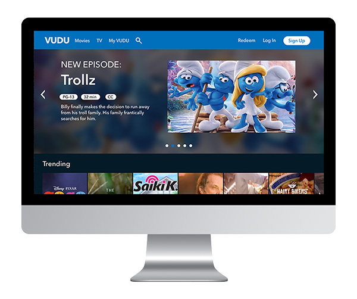
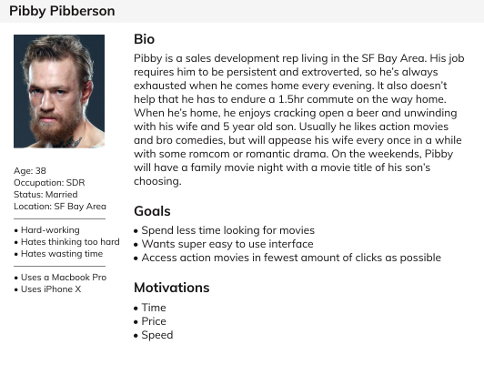
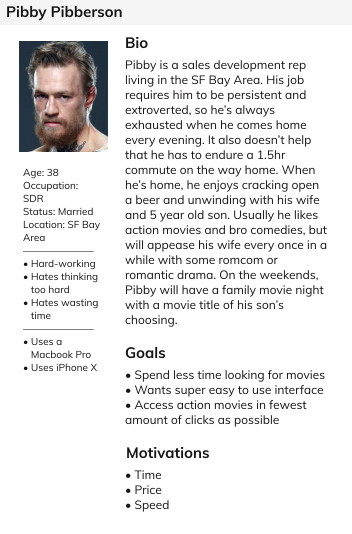
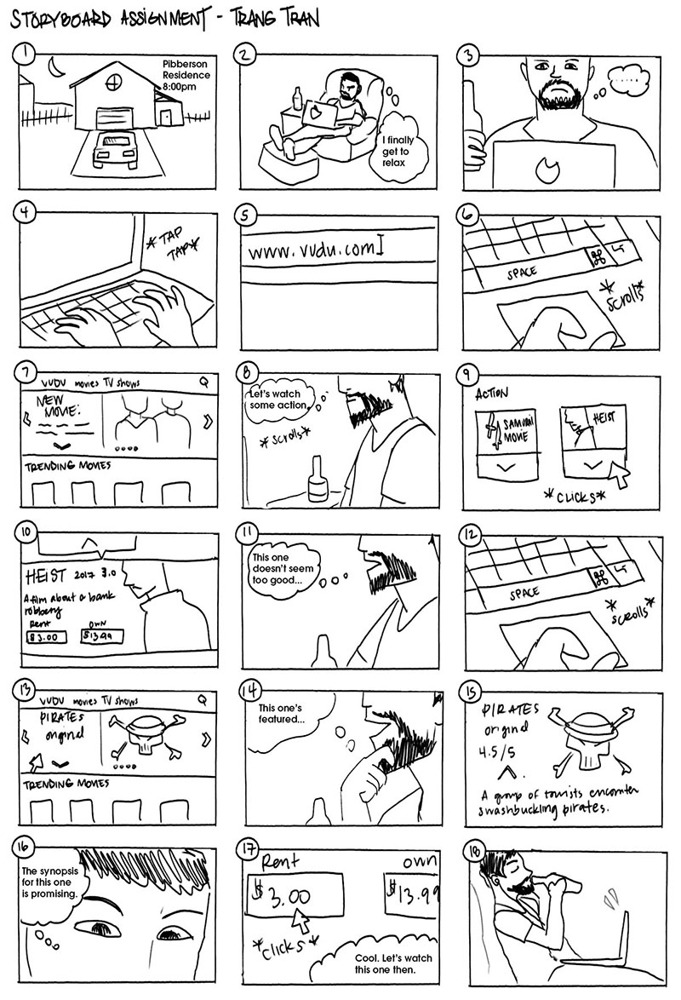
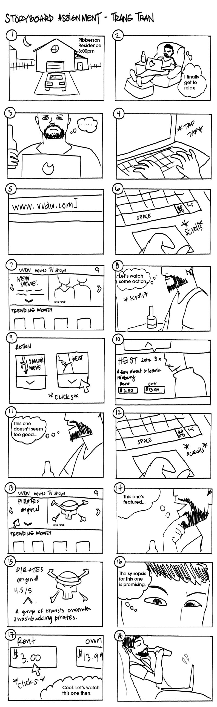
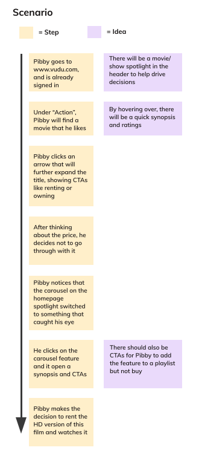
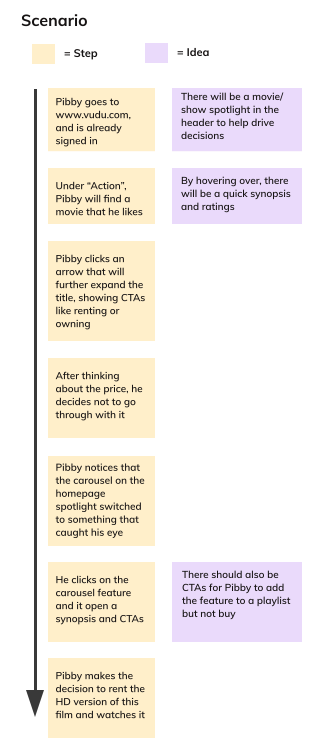
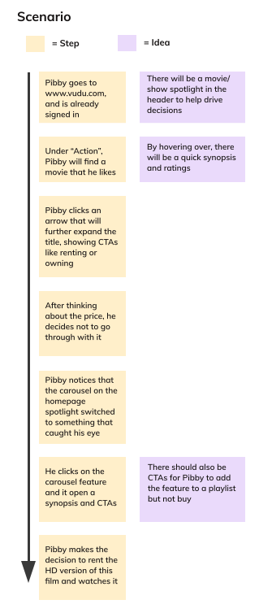
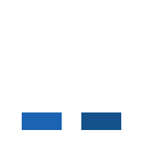
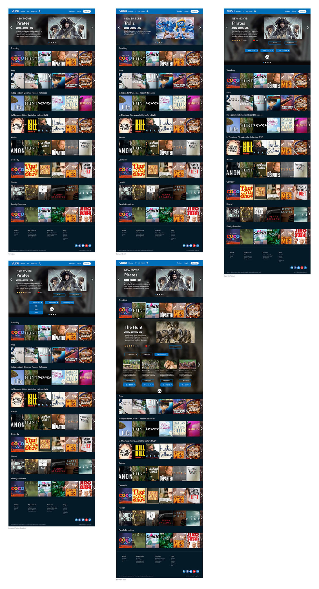

Vudu For Web
Visual Design | UX Design | Desktop

The Challenge of Navigating Through Vudu
For a while, I was interested in the technology of media streaming platforms which also led to my addiction of binge-watching series. Like most people of this generation, I spend a lot of time unwinding by watching movies and shows via Netflix, Hulu, or HBO, but I also took a look at Vudu's web interface at the time. Having used several streaming services, I had a lot of ideas as a user.
I felt that the Vudu interface was too cluttered. There was no hierarchical structure of information on the homepage and the images of the features are not optimized. With the shear amount of titles thrown at me on the homepage, it felt like everything was fighting for my attention. I wanted to design for the common user; someone who doesn't want to waste time sifting through titles they don't care about. My goal was to re-imagine the interface in a more useful way to users.
Creating the Persona
I created a persona based on the findings of several people's experience with various streaming services, Vudu included. This would help me step outside of myself and recognize what other people are looking for. However, I identified a common motive: people want to watch something that they've either heard about, or is promoted with high praise somewhere on the website.
What else do these people have in common? They're stringent on time because most of the watching happens in the evening. I designed a persona called Pibby based on this information.
 I sketched out a storyboard in comic-panel style to help me visualize the interactions. This also highlights the emotions users have as they go through the task flow.
 The User Taskflow
 

Along with an interpretive storyboard, I created a simple task flow that shows the scenario Pibby goes through to get to his goal. This flow helped me understand what features should be implemented in order to improve the design.
Wireframing
I created a wireframe to emphasize the interactions and flow on the homepage. Some of the features I've implemented include:
- Optimized carousel: On the current Vudu interface, there are highlighted features on the homepage, but instead of focusing on titles, it was focusing on price and genre. The images were also not optimized and are in low resolution. Instead, I would add in high quality images of single titles on each page.
- Inline CTAs: When users click on the highlighted feature, they will see a few call to actions. This makes it easy for them to make a decision on what they want to see.
- Snail trail: I included a snail trail scrolling for users to view content. At the end of each row, there are arrows indicating that there are more options available for that row. I also would make the last visible item darkened with an overlay to make the arrow stand out. The arrow will then move several selections across screen.
- Apparent synopses: Instead of users having to delve into a title to see the information, I wanted to make certain information readily available at the surface. This makes it incredibly easy for users to see important content quickly, spending less time to make decisions. For example, users will be able to see each episode's synopsis without a lot of commitment to one title.
Most of the improvements involved re-organizing the information present
The New Interface
Currently, Vudu uses blue for most of their interface. In my redesign, I kept true to the Vudu brand by sticking to the blue. Primary CTAs use a blue fill while secondary CTAs do not have a fill, but a blue outline instead.
The text and color palette as it appears on a dark interface

The Lesson
By involving myself in redesigning the Vudu interface, I was able to contribute to the process as a designer and as a user. This challenge allowed me to spend a lot of time in soliciting user feedback and task analyses, figuring out the most common challenges people come across. A lot of my inspirations were drawn from media streaming design best practices, but also my own flair as an artist.
What I've applied here in the design process can be applied to other things, not just streaming services. It was important to polish the presentation of information flow to get rid of conflict between content. Without thinking about the optimization of architecture at the forefront, no interface can function at its best.